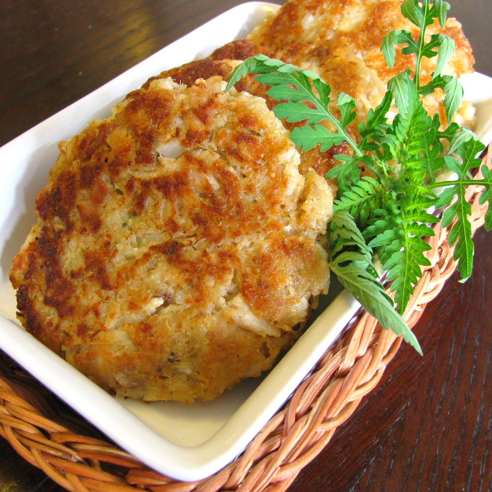

Easy Tuna Patties Recipe

Description
These tuna patties are delicious dipped in ketchup, mustard, or hot sauce. Great picnic snacks for Odin and his fellas during a sunny day in Valhalla!
Ingredients:
- 2 eggs
- 2 teaspoons lemon juice
- 10 tablespoons Italian-seasoned bread crumbs
- 3 tablespoons grated Parmesan cheese
- 3 (5 ounce) cans tuna, drained
- 3 tablespoons diced onion
- 1 pinch ground black pepper
- 3 tablespoons vegetable oil
Steps:
- Beat eggs and lemon juice in a bowl; stir in bread crumbs and Parmesan cheese to make a paste. Fold in tuna and onion until well combined; season with black pepper.
- Use your hands to shape tuna mixture into 8 (1-inch-thick) patties.
- Heat vegetable oil in a skillet over medium heat. Fry patties in the hot oil until golden brown, about 5 minutes per side.
Return to main page